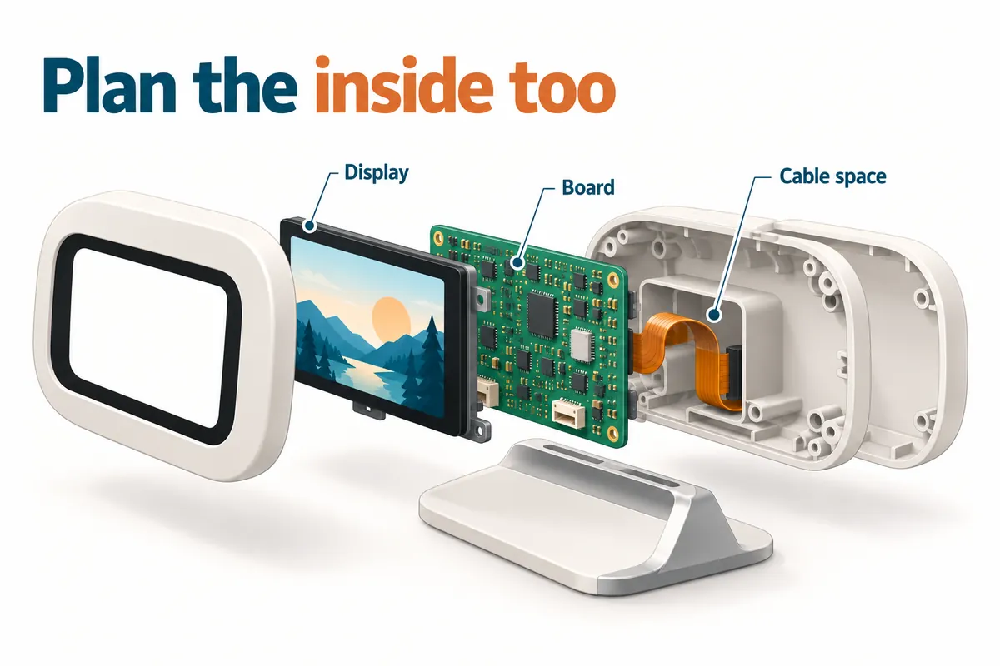
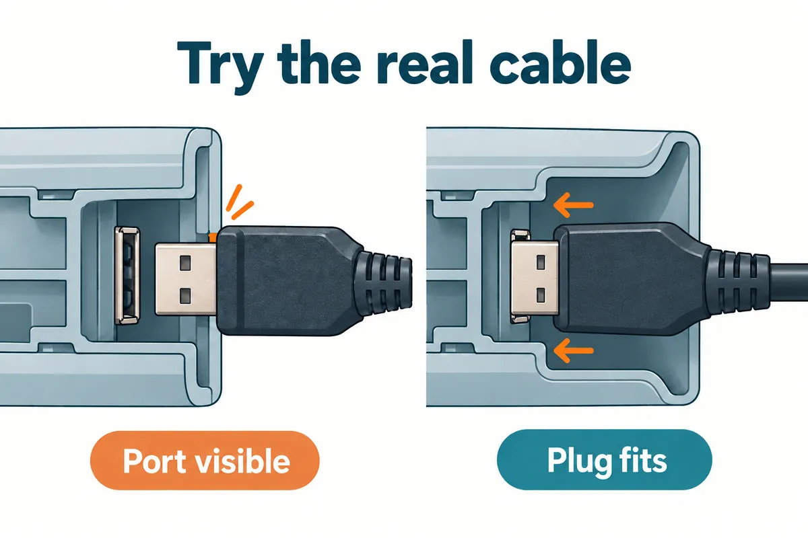

Your electronics work on the desk. Now you want a handful of complete units that someone else can use. It is tempting to send a picture of the finished shape to a supplier and ask what it would cost to make. But the answer depends on details that picture cannot show: how the board sits inside, where the cables go, and how someone puts everything together.
For this stage, ask for a complete prototype that answers those questions. A useful next build should let you assemble the device, connect it, run its main function and open it again when something needs changing. That gives you a clearer basis for deciding what to repeat in a small batch.
Imagine a small desktop display: a screen, a circuit board, a cable and a stand. We'll use that simple example throughout. The illustrations show a proposed design, not an Anvol product or a tested assembly. You do not need to design the electronics yourself to help define what this next version needs to do.

Start with the parts you actually intend to put inside
Make a short list of what you have and what is still a placeholder. Perhaps your display already has the right size, but the development board—the ready-made board you used to prove the idea—is too thick. Tell the engineer that. A case designed around today's board may be useful for a trial, while a thinner version needs more design work. Agree which version the next prototype is meant to represent.
Even having a computer model does not settle every fit question. In a Framework community discussion on September 23, 2026, a participant designing a case without the hardware asked how the mainboard met its mounting points. A Framework team member supplied photos and later linked more detailed design files. It is a small, concrete example of the information an enclosure designer may still need after seeing the board model.
Include the actual cable and plug in that discussion. A socket can be visible through a hole while the plastic body of the plug cannot reach it. Formlabs' enclosure guide specifically accounts for the cable body around a connector opening. For your prototype, ask the designer to show how your chosen plug enters the case, then try it on the physical part. An opening that looks generous on a screen is still something to check.

Try putting it together, then use it with the cover on
Ask whoever assembles the prototype to record the order of the steps. Does the screen go in before the board? Can they reach the screws after connecting the cable? Where does the cable sit when the cover closes? If assembly needs an improvised spacer or a hole filed by hand, record that change. Otherwise, the next person may receive files that no longer describe the unit you approved.
Think about opening it again, too. Will an engineer need access during the trial, or will a user need to replace something later? Protolabs Network's enclosure guide distinguishes connections intended for repeated opening from those that can stay closed. Tell the designer what access you need before choosing screws, clips or glue. For a prototype that is still changing, being able to get back inside can be useful.
Once assembled, run the job the display is supposed to perform, in the position where someone will use it. For a computer-based device, include a heat check with the case closed. Raspberry Pi's published Pi 5 cooling tests show why workload matters: sustained heavy work can make the processor reduce its speed to control temperature. Those results do not predict your enclosure's performance. Ask the engineer what needs measuring in your build, rather than assuming a successful open-board demo covers it.
Give the next build a specific job
At this point, you should have a list of things learned from the complete unit. Turn that into a purpose for the next build. You might need a few units to see whether people can place and connect the display without help. Or you might need another engineering sample because the mounting arrangement is still changing. These are different requests, and the supplier needs to know which one you mean.
Choose the enclosure process around that purpose. Protolabs Network describes printed enclosures as useful for checking form and fit, with some materials also suitable for end use. That leaves room to discuss a printed trial batch without treating it as the final manufacturing choice. Ask what material and finish the quote includes, what still needs checking, and what would change if you later chose another process.
Then put the matching information together. Include the current parts, case files or sketches, assembly photos, unresolved questions and the checks each finished unit should pass. Label the versions clearly. If the board moves a connector, the case opening may need to move with it. Have the engineer confirm which files belong together before anyone orders the next set of parts.
Ask for the next step you can meaningfully review
You can start a conversation before all those files exist. Send a short video of what works, photos of the actual parts, your preferred size and mounting position, and a sentence about who will try the next units. Mark the missing work plainly: for example, “The software works on this board; we need help deciding whether it can fit in a smaller case.” That is a useful starting point for an engineering discussion.
Ask for a proposal that separates design work, prototype assembly, checks and any follow-on batch. Agree what you will receive at each step and how changes will be handled. Before approving more units, review the complete sample and the instructions used to build it. Decide which checks should be repeated on every unit; a good first sample alone does not tell you whether the rest will match it.
Anvol's build process starts with sketches, development-board prototypes or partial designs, then works through the missing decisions before the next build. If your electronics work but the case and assembly are still unresolved, send Anvol what you have and what the next units need to do.